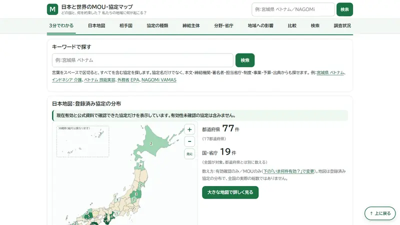
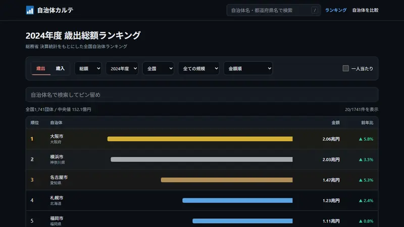
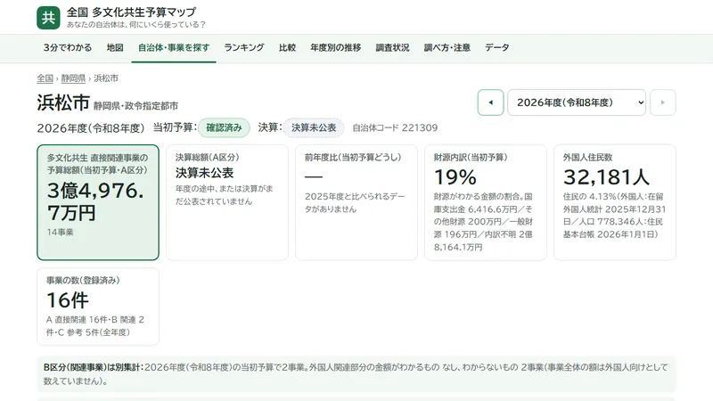
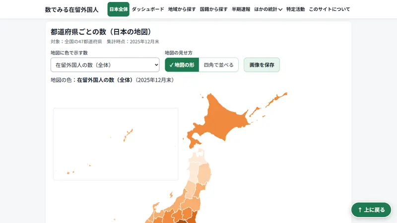
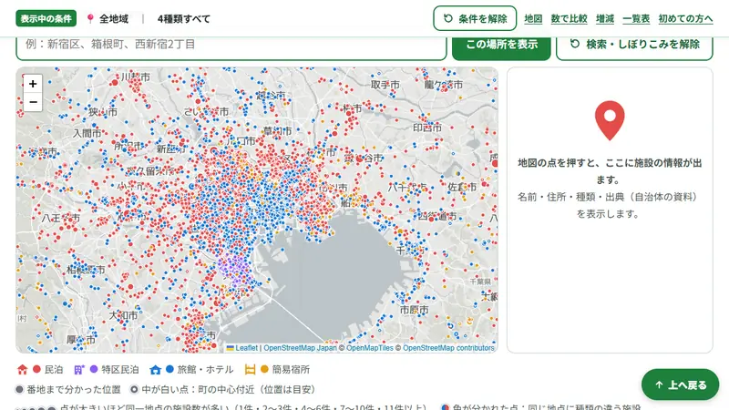
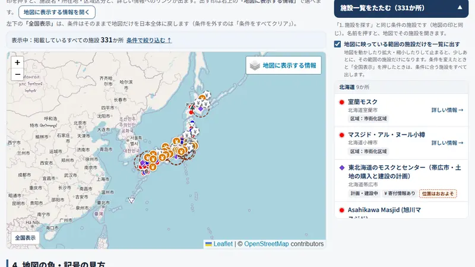
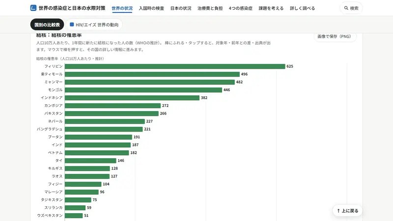
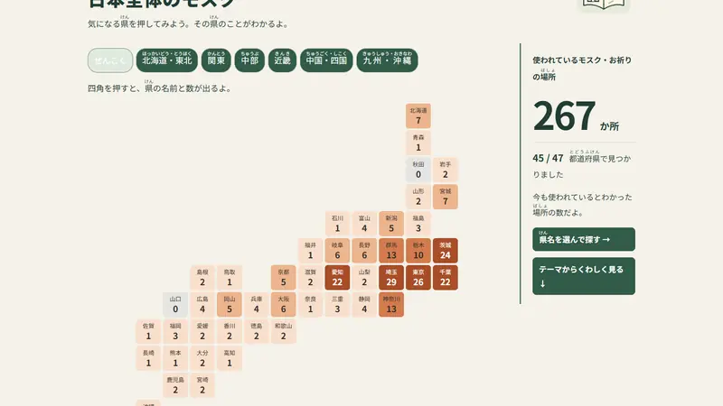
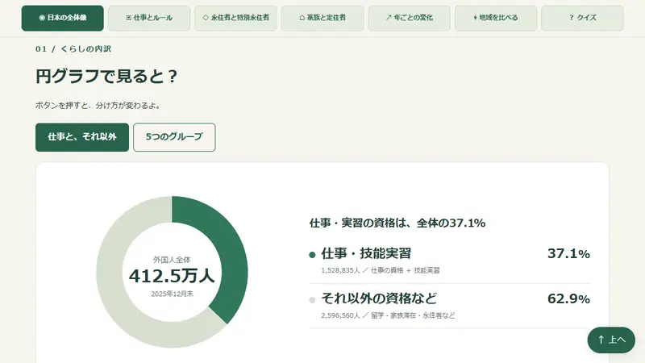

政策ログJP
国の政策や法案は、今どこまで進んでいる？
法案を「検討中・審議中・成立」などの段階や、省庁・テーマから探せます。閣議決定や国会の動きも時系列で追えます。
運営：Policy-log.jpさんX：@watermark_hd1（新しいタブで開きます）
日本のこと、あなたのまちのこと。
地図から調べて、比べて、知る。
どちらから調べますか？
地図で都道府県を押すか、名前で探してください。選んだ地域の情報を8つの専門サイトで、国全体の政策と世界の感染症も2つのサイトで調べられます。
都道府県を押すと選べます。小さい県は、上のボタンで地方ごとに大きくできます。
地域の選択例
全国
地図と地域ごとの情報を表示できませんでした（JavaScript が読み込めないか、無効になっています）。各サイトは「テーマから探す」の一覧から開けます。
12のサイトを、目的別に紹介しています。画面の写真やボタンを押すと、それぞれのサイトが新しいタブで開きます。
政策の進み具合、海外との協定、自治体のお金、外国人の数、地域の施設、感染症の広がりを、データと地図で詳しく調べられます。
横にスワイプすると、ほかのサイトも見られます
国の政策や法案は、今どこまで進んでいる？
法案を「検討中・審議中・成立」などの段階や、省庁・テーマから探せます。閣議決定や国会の動きも時系列で追えます。
運営：Policy-log.jpさんX：@watermark_hd1（新しいタブで開きます）

日本の国や自治体は、海外とどんな約束をしている？
海外とのMOU・協定を、日本地図や相手国・分野から検索。取り決めの内容、地域への影響、有効・終了・未確認の状況を調べられます。
「まず3分でわかる」：5つの図でMOUの仕組みを解説

自分のまちのお金は、どこから入り、何に使われている？
自治体名で検索して、歳入・歳出の内訳や人口の推移をグラフで確認。全国ランキングや、最大3自治体の比較もできます。
運営：自治体カルテさんX：@zititai_karte（新しいタブで開きます）

あなたの自治体は、多文化共生に何にいくら使っている？
日本語教室・相談窓口・学校での日本語指導などの予算と決算を、地図や自治体名から検索。国・県・自治体の財源の内訳や、ほかの自治体・過去の年度との比較も見られます（調べた自治体から順に公開中）。
「3分でわかる」：5つの図で予算の仕組みを解説

日本に住む外国人は、どこに、どの国から来ている？
都道府県・市区町村・国籍・在留資格から人数を検索。1959年からの移り変わりを、地図の色の変化で再生して見られます。

近所に、民泊やホテルはどれだけある？
住所や市区町村名で探して、民泊・旅館業の施設を地図上の点で確認。市区町村ごとの件数ランキングや、前回からの増減も見られます。

モスクは、どこにあり、だれが運営している？
地図や都道府県からモスク・礼拝所を探し、運営団体や建設計画、寄付の募集、葬儀・土葬墓地の調査結果を出典付きで確認できます。

HIV・梅毒・はしか・結核は、どの国で多い？
国別の感染状況をグラフで比べ、国や在留資格から入国時の検査を確認。日本の患者数の推移や治療費の負担も見られます。
「まず3分でわかる」：結核編・HIV/エイズ編
図やグラフ、クイズを使って、はじめての人にもわかりやすく紹介しているサイトです。

モスクってどんな場所？ 日本のどこにある？
地図やテーマ別の図解で、モスクの場所や運営する団体をやさしく紹介。好きなテーマを選んで10問のクイズにも挑戦できます。

日本に住む外国人は、どんな目的でくらしている？
仕事・家族・永住などの在留資格を、円グラフや「100人に置きかえた図」で紹介。年ごとの変化や地域の比較、クイズもあります。
このサイトについて
私たちの暮らす日本では、今、何が起きているのでしょうか。
国の政策、自治体のお金の使い道、外国人の在留状況、地域の施設や建設計画。
知りたいことがあっても、情報はさまざまな場所に分かれ、調べるのは簡単ではありません。
このサイトは、公開情報や公的統計をもとに、社会の動きを調べ、理解するための入口です。
詳しく分析したい人も、図やグラフで学びたい人も。
そして、知ったことをきっかけに、自分の意見を届けたい人も。
その最初の一歩に役立つ情報を集めています。
本サイトは、公的機関の資料、公開統計、一般に公開されている情報などを参考に、調査や学習に役立つWebサイトを案内するものです。
掲載情報は、特定の国籍、宗教、民族、個人、団体に対する差別、偏見、嫌がらせを目的とするものではありません。